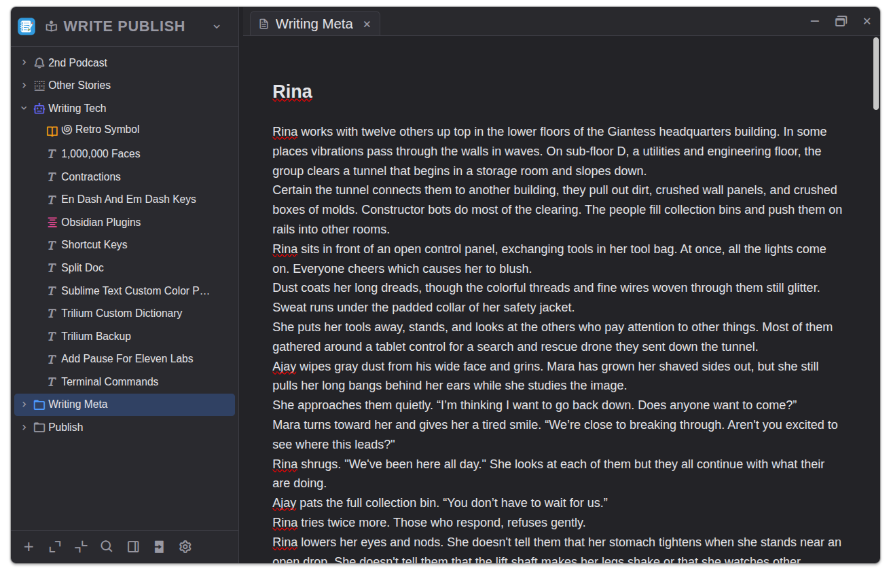
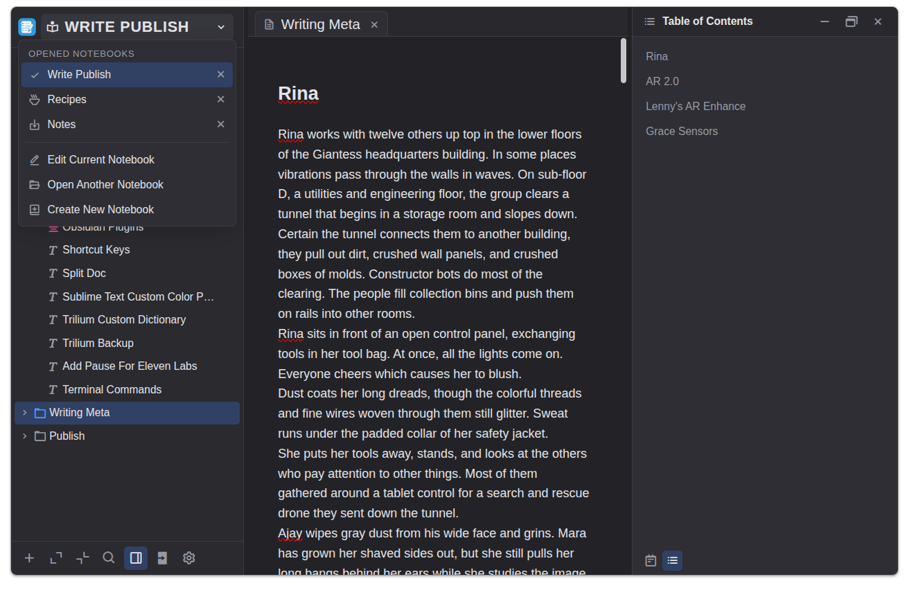
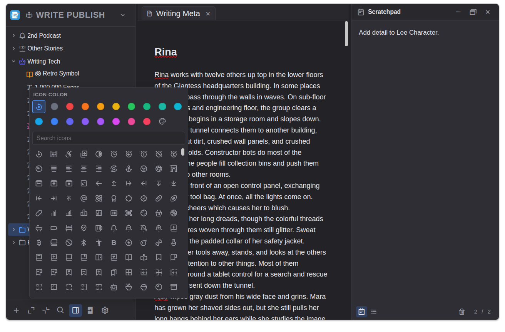
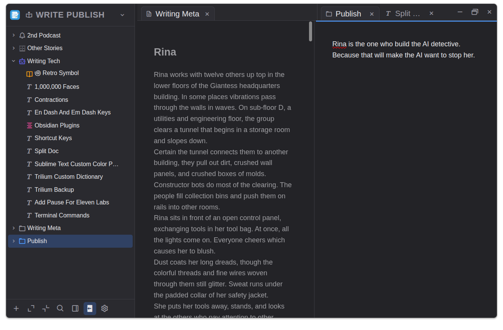
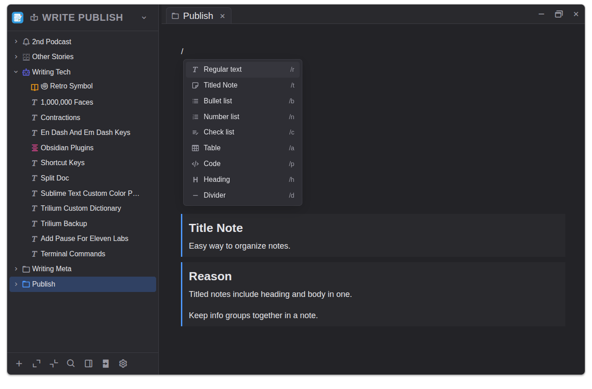
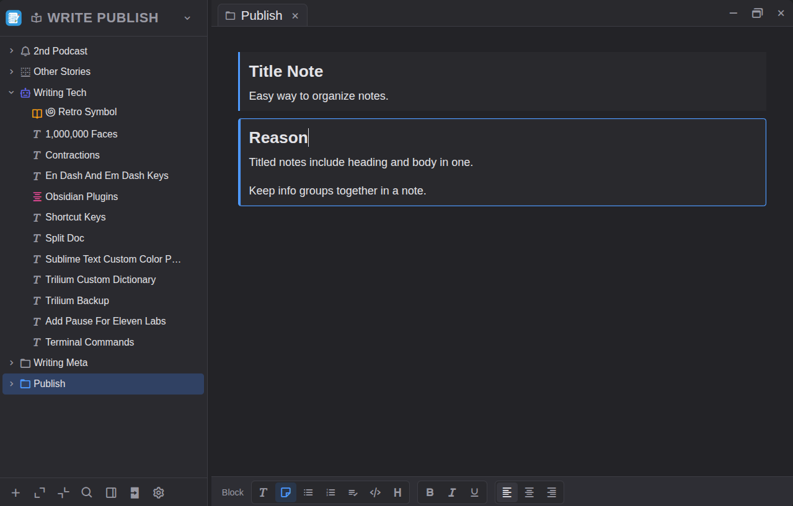

In20xx Notes is for people who write a lot of notes. Organize notes with limitless notebooks, note nesting, and titled note blocks within notes. Everything you need is a click away and yet buttons and ribbons never appear over your writing. Persistent scratchpad, side-by-side notes, color icons, and one-click copy are some of the features that help your note taking flow.

Notebook name at the top left. Drag and drop to rearrange notes on the tree. Expand or collapse nested notes with a single click. Open multiple tabbed notes. Options stay out of sight until you need them.

Switch between notebooks using the left menu. A table of contents for the active note displays on the right. Drag and drop within the table to reorder note sections. Headings and titled note blocks automatically generate the table.

Pick an icon and its color for each note. The persistent scratchpad with pages opens on the right. Idea dump, sketch draft, park fragments, and capture questions.

With double tabbed note windows, move info between notes, follow an outline, or compare two notes.

Type slash+letter to create blocks: regular text, titled notes, numbered titled notes, lists, tables, code, headings, and dividers. Drag and drop to reorder blocks. Unique to this software: titled notes and numbered titled notes makes it easy to group notes on one note page.

Toolbars appear at the bottom so you can always see your text. Minimal distraction yet powerful tools are a click away.
"If you take thousands of notes like I do, you must try this program. Taking notes is a pleasure when I use it. I can focus on meaning, content, and context."
Checking GitHub for the latest release… No installer telemetry, no account required. Download and install. Install instructions